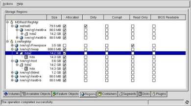
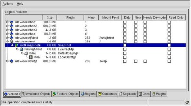

Перевод статьи Daniel Robbins.
Введение в EVMS.
В серии статей «Руководство по «продвинутым»
файловым системам», Daniel Robbins описывает использование самых последних
технологий файловых систем в Linux 2.4. По ходу изложения даются советы по их
практическому использованию, информация о производительности и важные
технические детали. В этой статье Daniel представляет Enterprise Volume
Management System (EVMS) для Linux. Он объясняет, что такое EVMS, для чего это
нужно и почему это наиболее вероятный путь развития управления storage на Linux
системах.
Вы когда-нибудь задумывались, сколько мощных,
storage-related технологий доступны для Linux? Вспомните хотя бы о журналируемых
файловых системах: ReiserFS, ext3, XFS и JFS. А ведь ещё несколько лет назад для
Linux такого не было. Теперь мы имеем сразу несколько журналируемых файловых
систем и пользуемся преимуществами, которые следуют из возможности выбора
наилучшей файловой системы под конкретную инсталляцию.
Однако только типами файловых систем богатство
выбора не ограничивается. Возможности software RAID в Linux, доступные уже
продолжительное время, открывают другой срез возможностей для Linux
администратора (для подробной информации посмотрите ссылки на две моих статьи о
Linux software RAID в разделе Resources).
Относительно недавно появилась LVM технология от Sistina (менеджер логических
томов). По этой технологии можно посмотреть ссылки еще на две статьи в разделе
Resources.
LVM позволяет администратору управлять дисковыми ресурсами более гибко, чем при
традиционном методе статических дисковых разделов. При помощи LVM можно
расширять и усекать файловые системы прямо на работающем сервере и пользоваться
другими возможностями, например snapshots.
Проблемы с управлением storage.
Linux имеет очень большую подборку связанных с
хранением информации технологий, и это порождает одну проблему. Имеются хорошие
tools для отдельных технологий, но их совместное использование вызывает
сложности. Представим, например, что мы хотим создать файловую систему ReiserFS
на LVM (логическом томе, чтобы иметь возможность динамически расширять её при
необходимости), а логический том, в свою очередь, находится на RAID-1
(обеспечивая дополнительную защиту в случае отказа диска).
Чтобы это реализовать, сначала, мы добавляем два
новых диска в систему и командой fdisk создаём на них разделы. Затем
создаём и наполняем содержанием файл /etc/raidtab и командой mkraid
инициализируем RAID-1 volume. После этого командами pvcreate,
vgcreate и lvcreate создаются LVM логические тома поверх RAID-1.
Только теперь, воспользовавшись mkreiserfs, создаём файловую систему на
логическом томе. После этого файловая система может монтироваться.
Нетрудно подсчитать, что в этом примере были
использованы четыре отдельных типа tools. Чтобы все прошло успешно,
инструментальные средства должны иметь непротиворечивый интерфейс. В процессе
эксплуатации файловой системы мы должны будем использовать и software RAID, и
LVM tools по необходимости. При этом ни один из инструментов «не видит» дальше
своего уровня, а уровни тесно связаны. Получается цепочка:
Имеются два диска.
На каждом диске по одному
разделу.
Разделы объединены в RAID-1 volume.
Этот том виден LVM как
«физический».
Он добавляется к LVM группе томов.
Из ресурсов группы томов
создан логический том.
На логическом томе находится файловая система
ReiserFS.
Такое число вовлеченных инструментальных средств
(и при этом каждое не подозревает о существовании смежников) достаточный
аргумент, чтобы отбить желание администратора ими воспользоваться. Если новый
администратор получает по наследству наш хитро сконфигурированный сервер, ему
придется на время переквалифицироваться в детектива. Даже если вся конфигурация
хорошо документирована (а это прямая обязанность предшественника), новый
администратор поимеет немало проблем. Почему? Потому, что в Linux имеется
множество storage-related технологий, а интерфейсы для управления ими не
подчиняются единой политике. Этот недостаток проявляется особенно сильно на
длинных последовательностях объединений в сложных конфигурациях storage.
Введение в EVMS.
Если вы заподозрили, что будет объявлено: EVMS
решает все перечисленные проблемы, значит, интуиция вас не подвела. Все проблемы
можно решить. EVMS предоставляет «униформу», хорошо расширяемую, основанную на
plug-in API для всех storage технологий под Linux. Что из этого следует? Это
означает, что благодаря EVMS, можно использовать единый tool для разбиения
дисков, создания объектов LVM и Linux software RAID. Можно использовать всего
один инструмент для любой комбинации технологий. EVMS позволяет увидеть полную
картину. Он реально показывает, как всё наслоено, начиная от файловой системы и
кончая физическими дисками. Кроме того, EVMS совместим со всеми существующими
Linux технологиями. Вам не потребуется вновь разбивать диски, создавать LVM или
RAID тома. Просто ранее существовавшая конфигурация storage становится доступной
через объединённый интерфейс управления. В настоящее время EVMS предлагает на
выбор интерфейсы командной строки, ncurses-based и GUI, написанный на GTK+. Для
возбуждения аппетита посмотрим пару screenshots GTK+ EVMS Administration Utility
(из версии 1.0.0) в действии. На рисунке 1 можно видеть, что lvm/vg1/swap
состоит из данных, которые физически находятся на разделе hda2 диска hda.

Рисунок 1. The Regions tab of the GTK+ EVMS Administration
Utility
Рисунок 2 показывает snapshot от корневого тома.
Этот snapshot является «замороженным видом» для lvm/vg1/root. Корневой snapshot
остаётся неизменным с момента создания, даже если файлы в корневой файловой
системе добавляются или удаляются.

Рисунок 2. The Volumes tab of the GTK+ EVMS Administration
Utility
Заметим, EVMS не просто совместим с существующей
конфигурацией storage, он предлагает новые, ранее недоступные возможности. Одна
из таких возможностей в релизе 1.0.1 – EVMS snapshot feature. Возможно, вы уже
знакомы с snapshotting от Linux LVM. Используя snapshots можно создавать
«неизменяемые виды» реальных файловых систем, что очень удобно для резервного
копирования. EVMS поддерживает LVM snapshots, но его собственная реализация
расширенная и позволяет делать снимки томов любого типа, даже для стандартного
Linux раздела! Кроме того, EVMS snapshotting позволяет создавать снимок в режиме
чтения – записи, по существу, создавая отдельно развивающиеся клоны файловой
системы. Разработчики EVMS работают над добавлением асинхронных snapshot
(быстрый, временный снимок) и над поддержкой rollback, что позволит делать
откаты на основном томе к любому состоянию, начиная с момента создания
снимка.
Теперь вы можете оценить свою потребность в EVMS
и имеете основные понятия, что с этим можно делать. Посмотрим что нужно для
получения работающего EVMS.
Инсталляция EVMS.
EVMS состоит из нескольких kernel patches и
userspace tools. Чтобы получить работающий EVMS, необходимо скачать EVMS source
архив, распаковать его и наложить patches на kernel source tree. После этого
компилируем EVMS userspace tools. В завершении инсталляции конфигурируем,
компилируем и перезагружаемся на EVMS-enabled ядро. После перезагрузки системы
ваш EVMS готов к использованию.
Если ищите простой способ начать работу с EVMS,
загрузите Gentoo Linux Game mini-CD (смотрите ссылки в секции Resources).
В дополнение ко всему прочему, на системах с видео карточками NVIDIA вы сразу
получаете OpenGL-accelerated игру. Наш Games mini-CD загрузит runtime версию
Gentoo Linux, включающую полную поддержку EVMS. Релиз 1.4 Gentoo Linux (еще не
вышедший при написании этой статьи), разумеется, тоже будет иметь полную
поддержку EVMS. Наш игровой/установочный mini-CD и официальный Gentoo Linux 1.4
CD позволят вам инсталлировать Linux с корневой файловой системой на EVMS
томе.
Для начала соединитесь с home page проекта EVMS.
В секции «Latest file releases» вы увидите ссылку на самую современную версию
EVMS. Щелкните по ссылке «download» и перейдите на main download page. Далее
процесс инсталляции описан для EVMS версия 1.0.1 из исходников (файл
evms-1.0.1.targz). Выбирайте ближайшее зеркало и скачивайте.
Получив архивный файл, распакуйте его в
temporary каталог:
# cd /tmp # tar xzvf /path/to/evms-1.0.1.tar.gz
Этот архив содержит EVMS userspace tools и
patches для kernel source tree. Для правильной компиляции EVMS userspace tools
необходимо прежде инсталлировать patches. Чтобы увидеть, какой релиз ядра нужен
для EVMS, войдите в каталог и введите ls: Listing 1. EVMS directory
listing
# cd evms-1.0.1/kernel
# ls
evms-1.0.1-linux-2.4.patch evms-linux-2.4.7-common-files.patch
evms-1.0.1-linux-2.5.patch evms-linux-2.4.9-common-files.patch
evms-linux-2.4.10-common-files.patch evms-linux-2.5.1-common-files.patch
evms-linux-2.4.12-common-files.patch evms-linux-2.5.2-common-files.patch
evms-linux-2.4.13-common-files.patch evms-linux-2.5.3-common-files.patch
evms-linux-2.4.14-common-files.patch evms-linux-2.5.4-common-files.patch
evms-linux-2.4.16-common-files.patch evms-linux-2.5.5-common-files.patch
evms-linux-2.4.17-common-files.patch lilo-22.2-evms.patch
evms-linux-2.4.18-common-files.patch linux-2.4.12-VFS-lock.patch
evms-linux-2.4.4-common-files.patch linux-2.4.18-VFS-lock.patch
evms-linux-2.4.5-common-files.patch linux-2.4.4-VFS-lock.patch
evms-linux-2.4.6-common-files.patch linux-2.4.9-VFS-lock.patch
|
Из вывода команды видно, что данная версия EVMS
совместима с ядрами от 2.4.10 до 2.4.18 и от 2.5.1 до 2.5.5. Для того чтобы
получить EVMS-enabled ядро, нам необходимо применить patches к имеющемуся kernel
source tree, загруженному из kernel.org. Далее описывается EVMS для 2.4.18
source tree, что является хорошим выбором. Если у вас нет архива ядра, например,
linux-2.4.18.tar.gz или .tar.bz2, скачайте его (смотри Resources).
Распакуйте архив в /usr/src и apply соответствующие заплаты EVMS:
Listing 2. EVMS patches
# cd /usr/src
(Если /usr/src/linux - symbolic link, введите:)
# rm linux
(а иначе:)
# mv linux linux.old
# tar xzvf /path/to/linux-2.4.18.tar.gz
# mv linux linux-2.4.18-evms
# ln -s linux-2.4.18-evms linux
|
В вашем распоряжении «ванильное» source tree в
/usr/src/linux-2.4.18-evms и ссылка /usr/src/linux, указывающая на него. Теперь
можно применить EVMS patches. Первым apply файл evms-1.0.1-linux-2.4.patch. Он
содержит новые EVMS-related файлы и необходим для любого 2.4.x kernel source
tree:
# cd linux # patch p1 <
/tmp/evms-1.0.1/kernel/evms-1.0.1-linux-2.4.patch
Далее, воспользуемся EVMS patch, специфическим
для вашей версии ядра. Такой patch изменит уже существующие файлы в Linux kernel
source tree, поэтому возможны проблемы, если версии ядра и patch не
совпадают:
# patch -p1 <
/tmp/evms-1.0.1/kernel/evms-linux-2.4.18-common-files.patch
Проверьте, имеется ли VFS-lock patch для
выбранной вами версии ядра. Если есть, следует apply и его, поскольку это
поможет EVMS легче получать snapshots в непротиворечивом состоянии:
# patch -p1 <
/tmp/evms-1.0.1/kernel/linux-2.4.18-VFS-lock.patch
Если использовали «ванильное» ядро для
исправлений и последовательность наложения не была нарушена, все patches
отработают без ошибок. Убедитесь в этом, просканировав patched kernel source
tree на предмет наличия '.rej' файлов:
# find -name '*.rej'
Если имеется хотя бы один .rej файл, то из этого
следует, что минимум один из patches был apply неправильно и требуется ручное
вмешательство. Как правило, rejects появляются, если patches накладываются на
-ac (или другие доработанные) ядра. Предполагается, что в этом случае вы сами
должны знать, что следует предпринять. Например, я использую -ac-based ядро с
EVMS patch. Многочисленных rejects это не порождает, но, даже отдельные проблемы
при компиляции требовали нетривиальных исправлений. Столкнувшись с такого рода
проблемами, вы можете обратиться за помощью к списку рассылки EVMS или посетить
#evms channel на IRC (смотри секцию Resources).
Теперь пришло время конфигурировать новое ядро.
Можно воспользоваться make menuconfig или make xconfig (что больше нравится) и
сконфигурировать ядро. Выбирайте ваши любимые опции, но при этом не забудьте
заблокировать «Multi-device support (RAID and LVM)», поскольку EVMS содержит
внутреннюю поддержку LVM и RAID. Подойдя к пункту «Enterprise Volume Management
System» выберите enable для всех опций для статической компиляции:
Listing
3. EVMS Kernel configuration
<*> EVMS Kernel Runtime
<*> EVMS Local Device Manager Plugin
<*> EVMS DOS Partition Manager Plugin
<*> EVMS SnapShot Feature
<*> EVMS DriveLink Feature
<*> EVMS Bad Block Relocation (BBR) Feature
<*> EVMS Linux LVM Package
<*> EVMS Linux MD Package
<*> EVMS MD Linear (append) mode
<*> EVMS MD RAID-0 (stripe) mode
<*> EVMS MD RAID-1 (mirroring) mode
<*> EVMS MD RAID-4/RAID-5 mode
<*> EVMS AIX LVM Package
<*> EVMS OS/2 LVM Package
<*> EVMS Clustering Package
(Default) EVMS Debug Level
|
Закончив конфигурирование, сохраните настройки и
выполните стандартные шаги по компиляции и инсталляции ядра. Перезагружаться на
новое ядро пока не следует. Еще до этого необходимо скомпилировать и
инсталлировать EVMS userspace tools:
Listing 4. Compile and install the
EVMS userspace tools
# cd /tmp/evms-1.0.1/engine
# ./configure --prefix=/usr --libdir=/lib --sbindir=/sbin
# --includedir=/usr/include --with-kernel=/usr/src/linux
# make
# make install
# ldconfig
|
Теперь userspace EVMS tools инсталлированы,
имеется EVMS-enabled ядро и можно на него перегрузиться. Как воспользоваться
вновь открывшимися возможностями будет описано в следующей статье. Если вы
нетерпеливы (а кому из настоящих исследователей это не свойственно?) и хотите
побыстрее увидеть некоторое EVMS «фичи», введите evmsgui с правами root и
загрузите GTK+ EVMS Administration Utility GUI.
Только несколько предупреждений. Будьте
внимательны, сделанные вами изменения входят в силу после их закрепления на
позиции «Commitchanges» меню EVMS Administration Utility. Не расслабляйтесь под
воздействием дружелюбия графического GTK+ интерфейса, EVMS весьма сложная
система и потребуется немало времени, чтобы освоить терминологию и применение.
Следующая статья будет «обучающей». До скорой встречи!
Resources
- Загрузка стабильного kernel source архива, например
linux-2.4.18.tar.gz или .tar.bz2, с kernel.org.
- Посетите официальный сайт разработчиков EVMS project
на SourceForge, или subscribe на лист
рассылки, или прочтите EVMS
документацию.
- Посетите #evms channel на
freenode IRC network. Там часто бывают EVMS developers.
- Посетите Sistina для
знакомства с Linux LVM технологией.
- Чтобы быстро начать работу с EVMS скачайте Gentoo Linux Game/Install
mini-CD -- grab livecd-ut2003-i586-1.4.1.iso из the Gentoo 1.4 x86 download directory.
- Познакомьтесь со статьями о Linux Software RAID от Daniel:
- Part 1: Introduction and installation
(developerWorks, February 2001)
- Part 2: Setup in a production environment
(developerWorks, February 2001)
- Познакомьтесь со статьями о Linux Logical Volume Management из:
- Part 1: Learning LVM (developerWorks, March 2001)
- Part 2: The cvs.gentoo.org upgrade (developerWorks,
April 2001)
- Переводы предыдущих статей серии «Руководство по «продвинутым» файловым
системам» можно найти здесь.